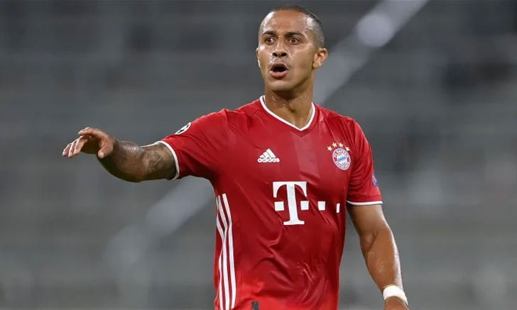
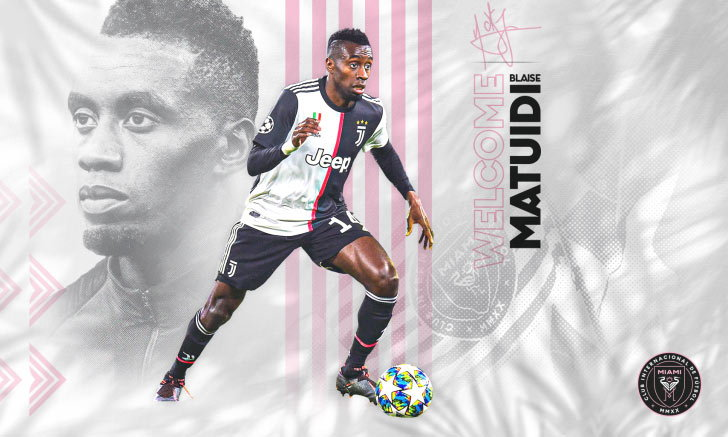

ปูด! หงส์เดินหน้า ยื่นเจรจา
ดีล "ติอาโก้ อัลคันทารา" อย่างเป็นทางการแล้ว
 สโมสรฟุตบอลลิเวอร์พูล แห่งศึก ฟุตบอลพรีเมียร์ลีกอังกฤษ ตกเป็นข่าวเดินหน้าเจรจากับ บาเยิร์น มิวนิค ในดีลการคว้าตัว ติอาโก้ อัลคันทารา ใน ตลาดซื้อขายนักเตะ ซัมเมอร์นี้อย่างเป็นทางการเรียบร้อยตามการรายงานจาก บิลด์ สื่อใน เยอรมนี
โดยสื่อดังกล่าวรายงานว่าทัพ หงส์แดง ได้ติดต่อกับ ฮาซาน ซาลิฮามิดซิช ผู้อำนวยการกีฬาของทัพ เสือใต้ ถึงความเป็นไปได้ในการซิวมิดฟิลด์วัย 29 ปีชาว สเปน ร่วมรัง แอนฟิลด์ หลังจากที่เจ้าตัวแสดงความประสงค์ไม่ต้องการต่อสัญญากับ บาเยิร์น ออกไปภายใต้สัญญาฉบับปัจจุบันที่เหลืออยู่กับต้นสังกัดอีกเพียง 1 ปีเท่านั้น
อย่างไรก็ตาม รายงานฉบับดังกล่าวยังชี้ว่า แมนเชสเตอร์ ซิตี้ ได้แสดงความสนใจในตัว ติอาโก้ ด้วยเช่นเดียวกันและพร้อมที่จะยื่นข้อเสนอในระดับเดียวกันกับที่ทัพ เสือใต้ ตั้งราคาเอาไว้ราว 30 ล้านยูโร และจะเป็นการหวนร่วมงานกับระหว่าง เป๊บ กวาร์ดิโอลา กับมิดฟิลด์เนื้อหอมรายนี้อีกครั้งหลังจากทั้งคู่เคยร่วมงานกันที่ บาเยิร์น มิวนิค มาแล้ว
ทั้งนี้ บิลด์ ชี้ว่าพลพรรค เร้ดแมชีน ยังไม่ได้ยื่นข้อเสนอที่เป็นตัวเลขอย่างเป็นทางการให้กับ บาเยิร์น พิจารณาแต่อย่างใด เพียงแต่เป็นการตั้งโต๊ะเปิดการเจรจาถึงความเป็นไปได้ในดีล ติอาโก้ เท่านั้น
"แฟร์ต็องเก้น" ตรวจร่างกายฉลุย เตรียมซบ เบนฟิก้า
แยน แฟร์ต็องเก้น ปราการหลังชาวเบลเยียม เดินทางไปตรวจร่างกายก่อนย้ายไปร่วมทีมกับ เบนฟิก้า ยอดทีมแห่งซูเปอร์ลีก โปรตุเกส ตามรายงานเมื่อวันพฤหัสบดีที่ 13 สิงหาคม
แนวรับวัย 33 ปี หมดสัญญากับ สเปอร์ส และสามารถย้ายทีมได้แบบไม่มีค่าตัวในช่วงซัมเมอร์นี้ โดยก่อนหน้านี้ตกเป็นข่าวกับสโมสรในอิตาลีทั้ง ลาซิโอ, โรม่า และ อินเตอร์ มิลาน
อย่างไรก็ตาม รายงานล่าสุดระบุว่า แฟร์ต็องเก้น อยู่ที่โปรตุเกสแล้ว เพื่อเข้ารับการตรวจร่างกายก่อนย้ายไปเป็นผู้เล่นของทีม “เหยี่ยวลิสบอน” โดยจะเซ็นสัญญาร่วมงานกัน 3 ปี
ทั้งนี้ แฟร์ต็องเก้น ย้ายจาก อาแจ็กซ์ มาอยู่กับ สเปอร์ส เมื่อปี 2012 ด้วยสนนราคา 10 ล้านปอนด์ ลงสนามรับใช้ยอดทีมแห่งนอร์ท ลอนดอน ไปทั้งหมด 315 นัด ยิงไป 12 ประตู แม้จะไม่เคยได้แชมป์กับทีม “ไก่เดือยทอง” แต่ก็พาทีมเข้าชิงฯบอลถ้วย 2 ครั้ง ซึ่งก็คือลีก คัพ เมื่อปี 2015 และยูฟ่า แชมเปี้ยนส์ ลีก เมื่อฤดูกาลที่แล้ว
เรียบร้อย! อินเตอร์ ไมอามี่ ประกาศคว้า "มาตุยดี้" แบบไร้ค่าตัว
แบลส มาตุยดี้ อดีตกองกลาง ยูเวนตุส กลายเป็นนักเตะใหม่ของ อินเตอร์ ไมอามี่ ทีมของ เดวิด เบ๊คแฮม เป็นที่เรียบร้อย
อินเตอร์ ไมอามี่ สโมสรน้องใหม่ เมเจอร์ลีก สหรัฐอเมริกา ยืนยันการเซ็นสัญญากับ มาตุยดี้ อดีตกองกลางทีมชาติฝรั่งเศสเป็นที่เรียบร้อยแล้ว หลังจากนักเตะยกเลิกสัญญากับ ยูเวนตุส ต้นสังกัดในอิตาลีแบบจากกันด้วยดี
สโมสรดังเอ็มแอลเอส เปิดเผยว่า มาตุยดี้ จะเข้ามาสวมเสื้อหมายเลข 8 คนใหม่ให้กับทีม หลังผ่านการตรวจร่างกายเมื่อไม่กี่วันที่ผ่านมา ตามด้วยการยกเลิกสัญญากับ เบียงโคเนรี่ เมื่อวันพุธ และเซ็นสัญญาเปิดตัวกับ อินเตอร์ ไมอามี่ อย่างเป็นทางการในวันพฤหัสบดี
สำหรับกองกลางวัย 33 ปี ครองแชมป์โลก 2018 ร่วมกับทีมชาติฝรั่งเศส, คว้าแชมป์ลีกเอิง 4 สมัย, เซเรียอา 3 สมัย และยังมีบอลถ้วย เฟร้นช์คัพ 3 สมัย, เฟร้นช์ลีกคัพ 4 สมัย, โคปปา อิตาเลีย 1 สมัยเป็นต้น และยังคว้ารางวัลนักเตะยอดเยี่ยมแห่งปีของฝรั่งเศสปี 2015 และถูกเลือกติดทีมยอดเยี่ยมแห่งปีของลีกเอิงถึงสองครั้ง